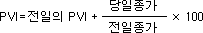

1. 의미 PVI는 현명한 투자가는 거래량이 증가되는 상태의 시장에서 매매를 행하는 반면에 일반 대중은 거래량이 충분이 증가된 상태에서 매매를 한다는 기본가정에서 출발한다.
따라서 이 지표는 전일에 비해서 거래량이 증가했을 경우에만 관심을 가진다. PVI에 정반대의 관점에서 출발한 지표로 NVI(Negative Volume Index)가 있다.
2. 계산식
당일의 거래량이 전일보다 증가했을 경우 
거래량이 같거나 감소했을 경우 PVI = 전일의 PVI
3. 적용방법 PVI는 보다 주관적인 관점에서 해석되는 경우가 많은데 일반적인 해석방법은 다음과 같다.
전통적인 차트분석 기법의 적용 : 추세선, 저항선/지지선 등의 전통적인 차트분석 기법을 이용하여 PVI를 분석하여 주가를 예측하는 분석기법을 말한다. 이동평균의 활용 : PVI의 과거 1년간의 이동평균을 구해 당일의 PVI가 이동평균 위에 있을 때에는 주가의 상승이 지속될 것으로 예상할 수 있다. 반대로 이동평균 아래에 있을 때에는 주가가 하락할 것으로 예측한다